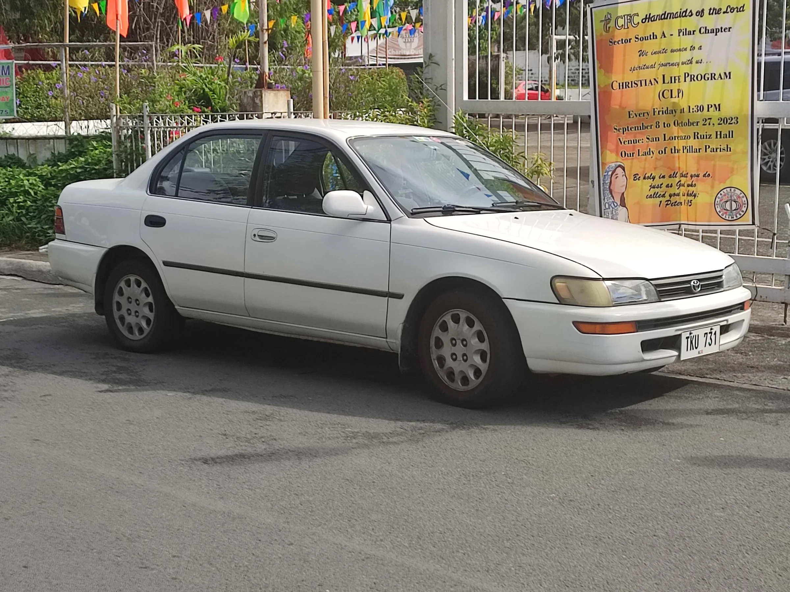
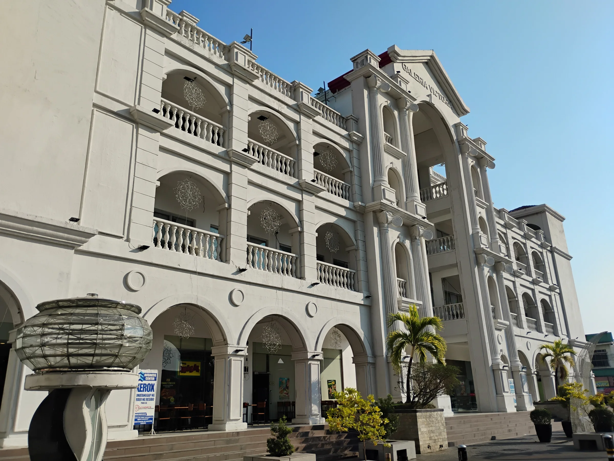
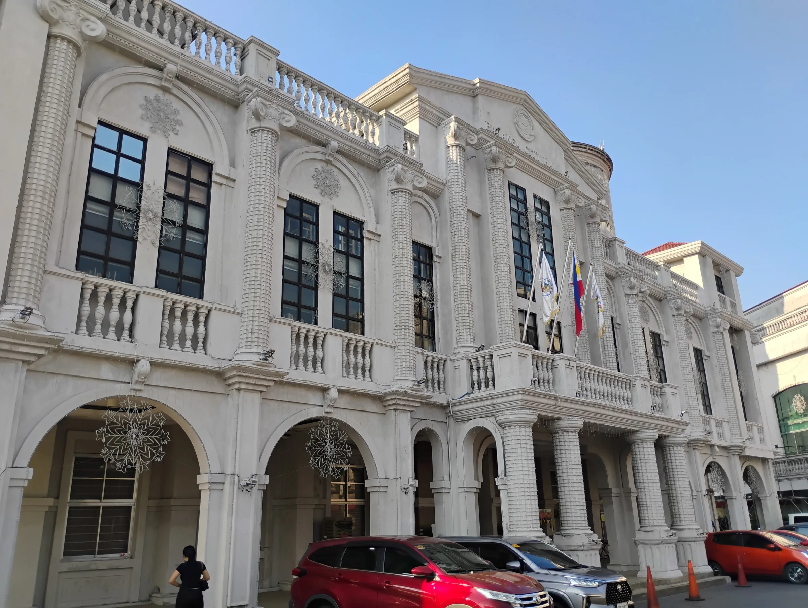
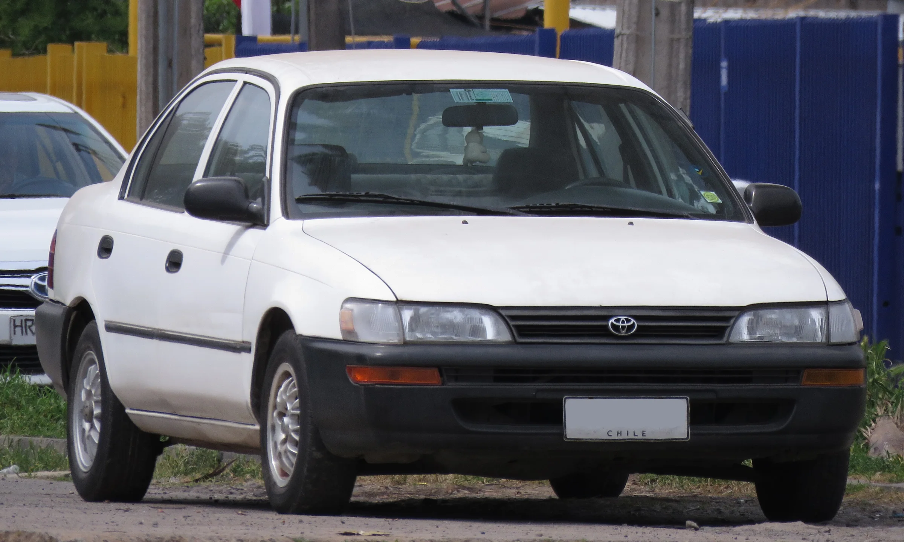
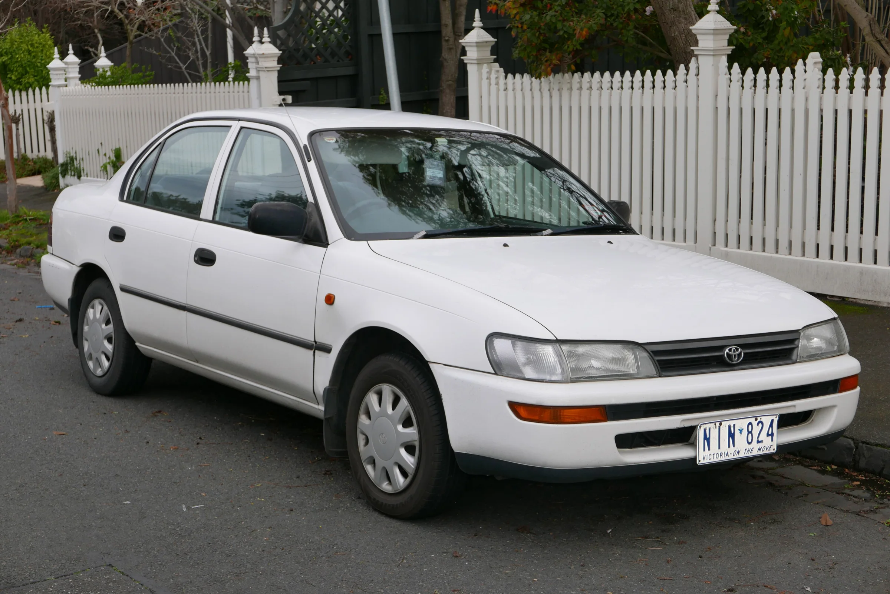
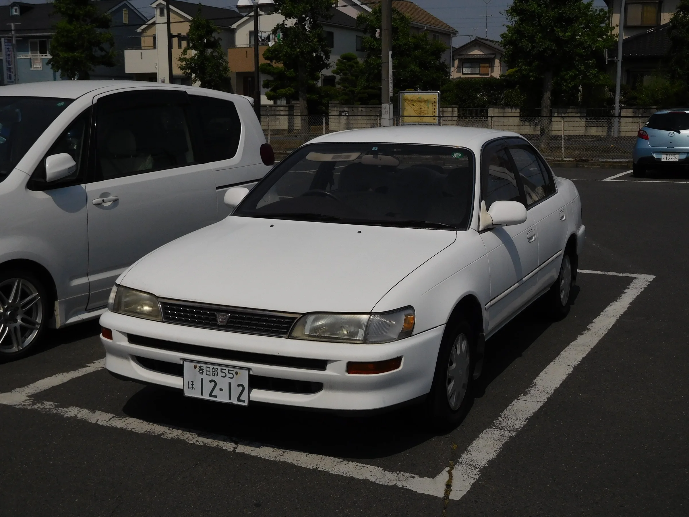
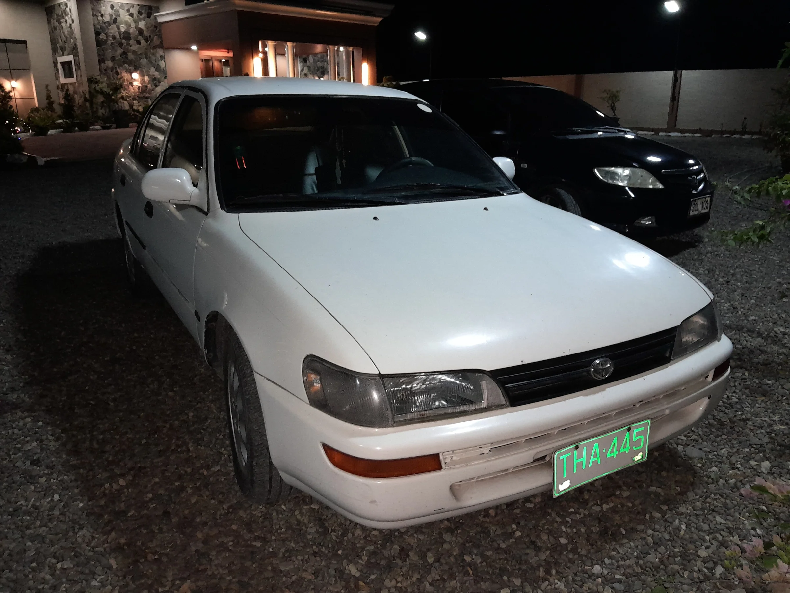

Eugene Quilban
Webflow developer. Philippines based. Working with Australia and the US.
Enter, click, or a controller button
Eugene Quilban
Webflow developer. Philippines based. Working with Australia and the US.
Enter, click, or a controller button
Time in Balanga: --:--
Published listings

Eugene Quilban
I turn Figma files and client feedback into clean, fast Webflow sites on Finsweet Client-First. Your words stay your words, every change is written down, and nothing goes live until you say so.
Profile
I'm a web developer from the Philippines. Most days I'm inside Webflow, building sites for agencies and their clients in Australia and the US. I work through Double Shot Growth, Rivyl and Atelic Digital, and I co-run a small studio of my own, Malaki Ethics Co.
I came to development through design and front-end, and I still care most about the parts a client can see: type that never leaves an orphan, motion that stays calm, cards that feel designed instead of flat. The engineering is there to protect that. Tokens, components and a written log of every decision mean a site still makes sense to the next person who opens it.
I'm direct. If a request will hurt the site, I'll say so in one line and then build what you asked for. If I'm unsure what you meant, I'll build the literal version and ask the one question that matters.
Hi-fi designs converted 1:1 on Client-First: variables, utility classes, components with props and variants, CMS collections and templates. Built so the Designer canvas is the source of truth, not a pile of custom code.
Scroll reveals, parallax, sliders, tabs, accordions and nav states in Webflow Interactions (IX3, GSAP under the hood). Subtle by default, off for people who ask for reduced motion, and never in the way of the page loading.
When there is no reference, I design with the client's brand guide: contrasting section grounds, soft gradients, real shadows, mock UI built in HTML and CSS instead of stock screenshots.
WordPress, Elementor and Maropost sites that misbehave. I read the code first, take a backup, change as little as possible and leave revert steps behind.
PageSpeed work, skip links, focus states, contrast ratios, schema, meta and a pre-launch sweep across every width from 390 to ultrawide.
Builder website, Australia. With Atelic Digital.
A Webflow build worked mostly from screenshots, since the Figma was scarce. Card-stack sliders with a custom scrollbar, a scroll-scrubbed hero, a component navbar with animated dropdowns, service pages and case study templates. I tuned it until PageSpeed read 91 to 96 on mobile and 99 to 100 on desktop.
Built by Eugene with Atelic Digital. Client and design ownership stay with them. Shown with thanks.
Two product sites for one Australian client. With Double Shot Growth.
Each page started as a static preview on Vercel so the client could review real code, then moved into Webflow on Client-First. Feedback came in rounds of PDFs and screenshots; every item was checked against the live page and logged. Interface graphics are built in HTML and CSS, so they animate and stay sharp. Omble also got an Insights blog on the CMS with case study linking.
Built by Eugene with Double Shot Growth. Client and design ownership stay with them. Shown with thanks.
Education collective. With Rivyl.
A hi-fi Figma converted to Webflow: a hero with layered parallax, location tabs, testimonials and FAQ components that switch between static and CMS content, an Insights page with Finsweet filters, and brand colours driven by CMS categories.
Built by Eugene with Rivyl. Client and design ownership stay with them. Shown with thanks.
Real estate website, WordPress. With Atelic Digital.
Sold listings never left the site. I traced it to the property sync plugin replaying every XML feed each hour and overwriting the sold date. After a backup, I fixed it on the live site: the published listings dropped from 56 to the correct 21, and they stayed correct after the next sync.
Built by Eugene with Atelic Digital. Client and design ownership stay with them. Shown with thanks.
Campaign landing page. With Rivyl.
An Astro app on Webflow Cloud, mounted under the agency's own domain, built from a Figma frame.
Built by Eugene with Rivyl. Client and design ownership stay with them. Shown with thanks.
Calltek Double Shot Growth
Webflow build for a US client, worked directly in the Designer.
Rob Kropp Rivyl
A trades coach's site, rebuilt 1:1 from Figma on a fresh token system.
ATI Rivyl
Ongoing work on a Maropost Commerce Cloud store, staging first, every change committed.
A WooCommerce store Atelic Digital
Clean-up and security review after a hack left 19,278 spam posts behind.
Coughlan Homes Atelic Digital
Spam protection on the contact form and a sideways-scroll fix on a live Elementor site.
I build copy exactly as you send it, typos included. I flag them; I don't fix them. If content is missing you'll see a labelled placeholder, never a sentence I made up.
I check on localhost or staging first. Publishing happens on your word, one yes per publish, and afterwards I open the live URL to confirm it's really there.
Not a search through the code, not my memory of it. I open the rendered page and measure it at 1440, 1100, 992, 768 and 390, plus ultrawide before sign-off.
Each change goes into the project log with the date and who asked for it. You can always see why something is the way it is.
Clients change their minds, and that's fine. I build asks as small overrides that one setting can reverse, and I hide or move things instead of deleting them.
If something next to the task looks wrong, I tell you in one line. I don't quietly redesign it.
I work with Claude Code as a second pair of hands. It doesn't decide anything. It follows a rule book I wrote and keep up to date: my standards, each client's preferences, and the mistakes that became rules. That's why the output reads like me and not like a template.
What that system includes
A Webflow starter kit with my own variable system, breakpoints, utilities and motion presets, tested on a guinea pig site before any client sees it.
Written standards for builds, QA and accessibility, refined across every project.
Checklists that catch the things AI tools get wrong: invented copy, generic layouts, motion that never finishes.
A three-person Webflow and Shopify studio I run with Pat and Paul. Straight numbers, honest timelines, no dark patterns.
I'm learning Godot and making small games. Level design and building environments are the parts I love most.
The Philippines. My working day overlaps most of the Australian business day.
Yes, most of my work is with agencies. I work in your Webflow workspace, your Figma and your ticket board, and I can work white-label.
The design file or references, the copy, brand fonts with their web licence, and who signs off.
Yes. Great Southern Homes was mostly built that way.
Send me the brief, the Figma link or just a few screenshots. I'll tell you what it needs, what it doesn't, and what it'll take, in writing.
[PLACEHOLDER: email address] [PLACEHOLDER: LinkedIn]
Album






Eugene Quilban


.jpg){kind=link}
_CSi_sedan_(2015-07-24)_01.jpg){kind=link}